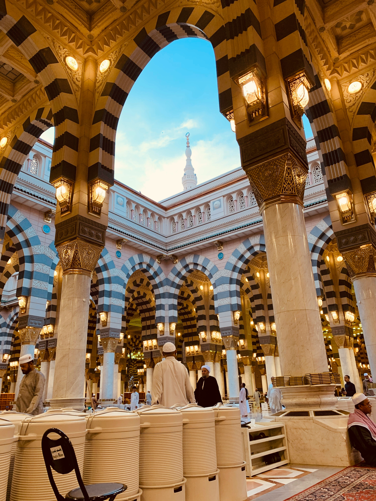

“Di antara orang-orang mukmin itu ada lelaki yang benar-benar menepati apa yang telah mereka janjikan kepada Allah. Di antaranya ada yang telah menunaikan nazarnya dan di antaranya pula ada yang masih menunggu, dan mereka tidak mengubah (teguh pada janjinya).” (QS. Al-Ahzab: 23)
Keistimewaan Madinah
Tanah Suci yang Diberkahi – Madinah dipenuhi berkah dan rahmat dari Allah SWT.
Masjid Nabawi – tempat dimakamkannya Nabi Muhammad ﷺ dan pusat ibadah umat Islam setelah Makkah.
Hijrah Rasulullah ﷺ – titik awal perubahan besar dalam sejarah Islam.
Tempat Berkumpulnya Sahabat – pusat penyebaran dan pengembangan ilmu Islam.
Kota Damai – dikenal sebagai Madinatun-Nabi, kota yang membawa kedamaian dan keamanan bagi umat Islam.

Hadits tentang Keutamaan Madinah
Rasulullah ﷺ bersabda: “Madinnah adalah tanah suci dan tempat yang paling disukai Allah setelah Makkah.”(HR. Bukhari & Muslim)
Kenapa Harus Mengunjungi Madinah?
Madinah bukan hanya sebuah kota, tapi rumah bagi sejarah Islam dan perjalanan spiritual yang mendalam. Di sini, umat Islam bisa merasakan kedamaian dan menguatkan ikatan hati dengan Rasulullah ﷺ serta para sahabat. Mengunjungi Madinah adalah momen refleksi, memperbaharui iman, dan memperdalam cinta kepada agama.
Madinah adalah titik awal penyebaran Islam yang membawa cahaya dan kedamaian ke seluruh dunia, menjadikannya salah satu destinasi spiritual paling bermakna bagi umat Muslim.